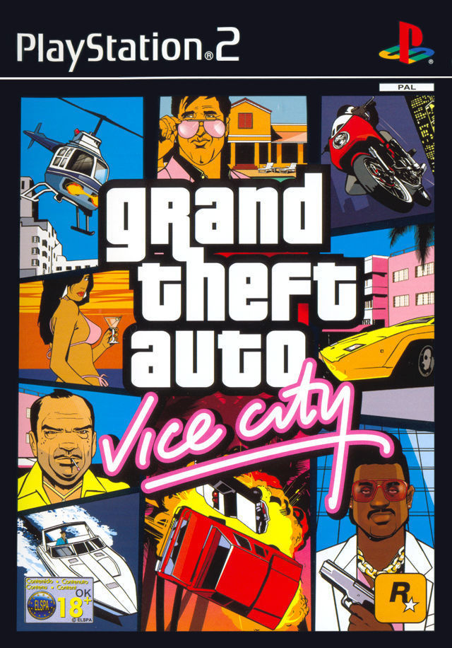
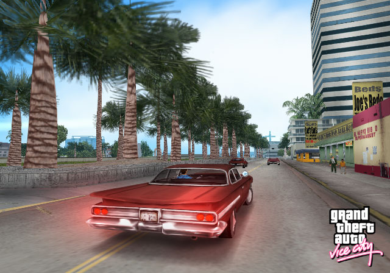
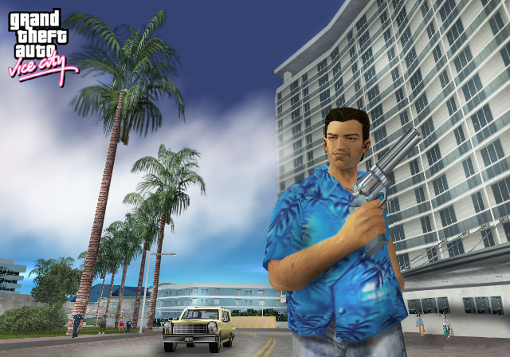
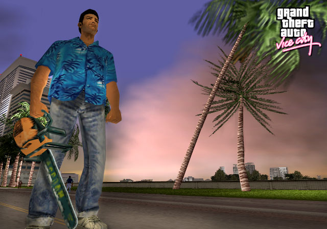
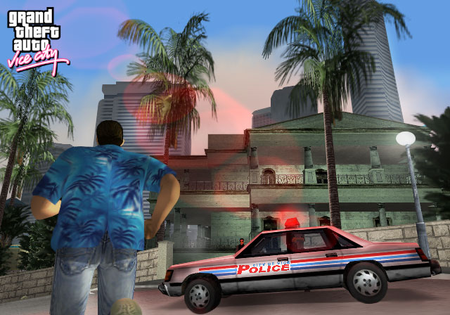

Grand Theft Auto: Vice City

Descripción
Bienvenidos a los años 80. Vice City nos lleva a una época de excesos, trajes de tonos pastel y grandes peinados, donde nos pondremos en la piel de Tommy Vercetti, un criminal que intentará hacerse un nombre y alcanzar la cima del mundo del crimen.
La aventura se desarrolla en Vice City, una enorme ciudad inspirada en Miami, que cuenta con una gran variedad de zonas, desde playas y barrios lujosos hasta zonas más humildes y pantanos. Como en anteriores entregas, tendremos libertad para explorar la ciudad, completar misiones y decidir cómo queremos desenvolvernos en este mundo lleno de oportunidades, peligros y corrupción.
Capturas del videojuego




Información del videojuego
| Desarrollador | Plataforma | Fecha de lanzamiento |
|---|---|---|
| Rockstar North | PS4, PC, Mac, iOS, PS2, Android, Xbox, Kindle | 27 de octubre de 2002 |
Remasterización
Grand Theft Auto: The Trilogy - The Definitive Edition (2021)
Esta edición incluye una versión remasterizada de Grand Theft Auto: Vice City junto con Grand Theft Auto III y Grand Theft Auto: San Andreas.
Mi opinión personal
Ufff, juegazo. La verdad, ¿qué más puedo decir? Estamos ante un título mítico que nos cuenta la historia de nuestro protagonista, Tommy Vercetti, quien llega a Vice City para realizar un negocio que acaba saliendo bastante mal. Tras perder el dinero y la mercancía, tendrá que abrirse camino por el mundo criminal de la ciudad, recuperar lo perdido y poco a poco construir su propio imperio.
Vice City está claramente inspirada en Miami durante los años 80, y también toma referencias de películas y series de aquella época, como Scarface y Miami Vice. De hecho, podemos encontrar varios guiños a Scarface, como el famoso baño con una motosierra y restos de sangre, que recuerda a una de las escenas más míticas de la película.
Del juego podría estar hablando durante muchísimas líneas, pero, por resumir, cuenta con una historia muy entretenida, una gran variedad de personajes y un montón de misiones principales y secundarias. Una de las que más recuerdo es aquella en la que tenemos que manejar un helicóptero teledirigido para colocar explosivos y destruir un edificio.
Pero si hay algo que hace Especial a este GTA es su ambientación. Para su época era una auténtica locura, y la banda sonora es espectacular. ¿Cómo olvidar dar una vuelta con una Faggio mientras suena «Billie Jean», de Michael Jackson? Esos momentos son parte de la magia de Vice City.
En definitiva, estamos ante un videojuego mítico que supuso un salto enorme para Rockstar Games y que ayudó a consolidarla todavía más como una de las grandes compañías de la industria.